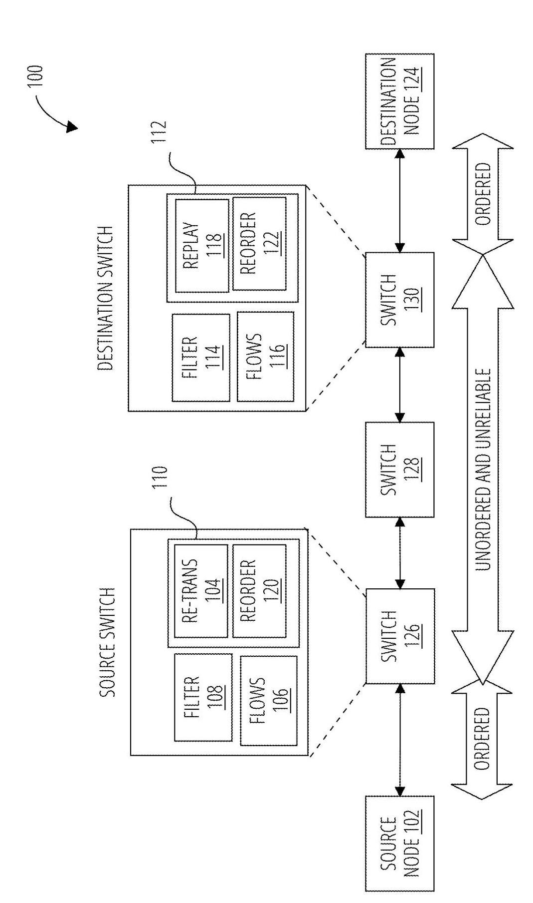
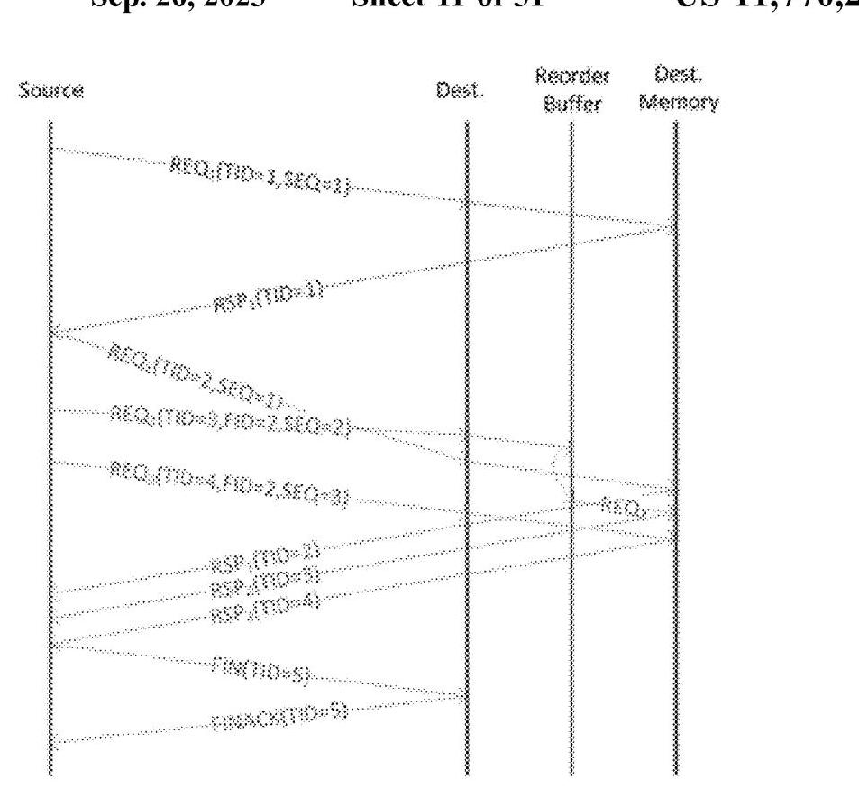
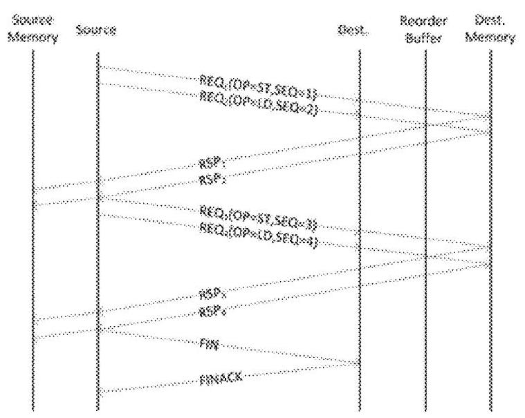
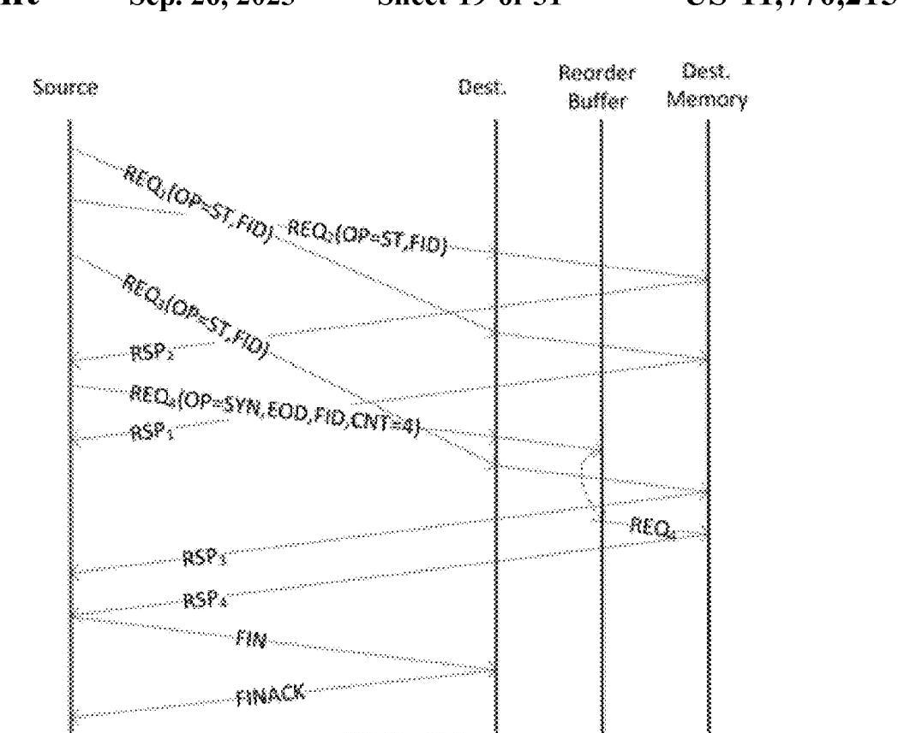
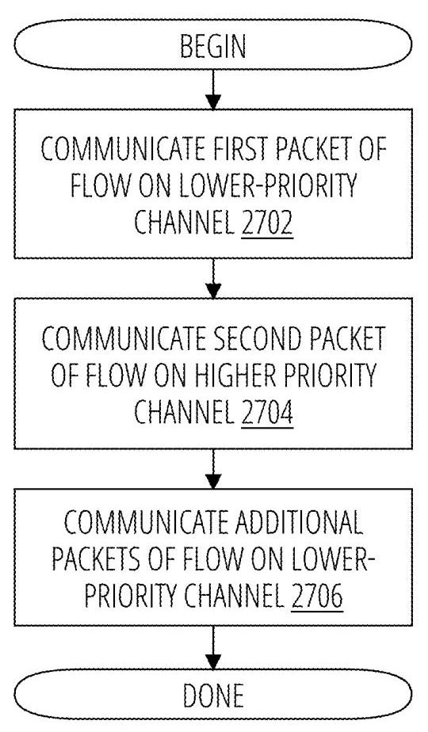

Transceiver system with end-to-end reliability and ordering protocols 深度解读
作者：Hans Eberle, Larry Robert Dennison, John Martin Snyder
会议/期刊：U.S. Patent US 11,770,215 B2，授权日 2023-09-26，Assignee: NVIDIA Corp.
一句话总结：这份专利提出一组面向 unordered and unreliable switched packet network 的端到端协议，用 late on-the-fly flow setup、history/same-address filters、go-back resynchronization、ordered response delivery、counted writes 和 fast path 机制，在不把整个网络强行变成全序可靠网络的前提下，为 GPU/多处理器内存操作提供按需的可靠性、顺序性和 exactly-once delivery。
一、问题定义
这份文档不是常规论文，而是一份 NVIDIA 专利。它关心的背景是多 GPU、多处理器或数据中心节点之间通过 switched packet fabric 传输内存操作：例如一个 GPU 通过 NVLink/NVSwitch 访问另一个 GPU 的 memory，网络中间可能有 source switch、destination switch 和多个 intermediate switches。为了获得吞吐，网络希望支持 adaptive routing、multi-pathing 以及 unordered delivery；但内存系统又要求某些操作必须保序，例如同一 memory address 上的 load/store 需要满足 per-location observation order，bulk data transfer 后面的 synchronization operation 不能早于数据包执行，IO traffic 也常常带有 ordering rules。
传统做法有两个极端。一个极端是让网络本身提供强可靠、强顺序，类似 TCP 或 IB RC 这类 connection-oriented protocol；问题是它们对 small, low-latency memory operations 不够轻量，也会削弱多路径和自适应路由。另一个极端是让 endpoint 自己处理乱序、丢包、重复包；这保留了网络吞吐潜力，但需要在 endpoint 或 switch 侧维护足够的状态，保证内存模型不被破坏。
本文属于非 First 类型：它不是首次发现 packet network 可靠性或 ordering 问题，而是在已有 reliability/ordering protocol 基础上，把问题收窄到 GPU/多处理器内存操作的 packet flow，并提出一套更轻量、更按需的协议组合。它的切入点是：不是每个 packet 都需要完整连接语义，真正需要 order 的只是那些发生数据依赖的 flow，例如同地址访问、同步操作或 IO ordering。
动机评估：动机是 solid 的。专利明确指出，系统如果把 relaxed memory ordering 扩展到网络，就能受益于 adaptive routing 和 multi-pathing；但同一地址顺序、LD/ST observation order、synchronization operation 又不能被破坏。薄弱点在于它没有像论文那样提供 benchmark 或硬件测量，因此“性能收益”更多是体系结构推理，而不是实验结果。
核心 Insight：一个 same-address flow 并不一定在第一个 packet 发送时就能被确定，只有当后续 packet 访问同一位置时，系统才知道这些 packet 需要组成一个 ordered flow。因此协议可以把 connection setup 延迟到第二个相关 packet 到达时再做：source 用 same address filter 发现依赖并打上相同 identifier/递增 SEQ，destination 用 history filter 判断第一包是否已经到达，再 late on-the-fly 地建立 flow。这个 insight 让系统避免对 singleton 预先建连接，同时保留必要的顺序控制。
二、相关工作
这份专利的 related work 主要通过引用列表和正文中的对比来体现，而不是论文式的相关工作章节。它引用了大量 packet reliability、transport、ordering 相关专利，以及 Hans Eberle 和 Larry Dennison 在 SC 2018 的 "Light-Weight Protocols for Wire-Speed Ordering"。从正文看，可以把相关工作分成四类。
第一类是 connection-oriented reliable transport，如 TCP 或 InfiniBand reliable connection。它们提供可靠、有序语义，但专利认为这些协议没有针对 small, low-latency reads/writes 优化，也不天然适配 GPU fabric 中需要的 multi-pathing 和 dynamic adaptive routing。它们的问题不是不能解决可靠性，而是代价和语义粒度太重。
第二类是 network-level ordering。这类方法让网络保证 packet order，从而简化 endpoint；但当系统规模从几十个 endpoint 扩展到成百上千个 endpoint 时，网络侧全局保序会增加排队、约束路由选择，降低吞吐和扩展性。本文的方向是把 unordered fabric 保留下来，只在 endpoint/switch 逻辑中对需要保序的 flow 做选择性处理。
第三类是 endpoint-side reorder/replay/deduplication。这类方法通过 reorder buffer、retransmission buffer、scoreboard、deduplication filter 等结构在端侧恢复语义。专利沿用了这些基本 building blocks，但进一步区分 ALOD/EOD、fetching/non-fetching operation、LD/ST observation order，并给出资源耗尽时的 NACK、reservation、backoff 策略。
第四类是 quality-of-service / low-latency fast path。专利引用 "Queues don't matter when you can JUMP them!" 这类低延迟队列调度思想，把它用于第二个 packet：让第二个 packet 走 higher-priority channel，尽快抵达 destination 建立 flow，从而减少 history filter 误淘汰导致的 retransmission。这里的差异点是 fast path 不是服务普通 QoS，而是服务 flow establishment 的正确性和资源控制。
三、技术挑战
-
同一网络既要高吞吐又要按需保序。完全保序会削弱 adaptive routing 和 multi-pathing；完全无序又会破坏同地址内存访问、同步操作和 IO ordering。
-
flow 何时存在并不显然。REQ with SEQ=1 可能是 singleton，也可能是未来 flow 的第一包。若 destination 在第一包到达时就建 flow，会浪费状态；若等太久，又可能错过正确关联。
-
乱序会把 singleton 和后续 flow 混在一起。如果 singleton 和一个后续 same-address flow 的 packet 交错到达，destination 仅凭地址无法判断某个 SEQ>1 packet 应该关联到哪个第一包。
-
REQ/RSP 丢失会同时制造可靠性和顺序问题。丢 RSP 可能意味着 destination 已执行操作但 source 不知道；盲目重放会让 loads、stores、atomics 出现不同语义风险。
-
fetching operation 需要 replay buffer，但 replay buffer 很贵。尤其 LD followed by ST 时，如果重试 LD，需要保留被 LD 读出的值以避免错误观察顺序；专利试图通过序列化特定模式减少 replay buffer 需求。
-
synchronization operation 不能早于数据包执行。bulk transfer 允许 data packets 内部 unordered，但尾部同步必须等全部 data packets 到齐；一旦中间丢包，destination 侧计数器又容易失步。
-
有限资源不能导致协议死锁或饥饿。flow state、history filter、reorder buffer、response buffer、replay buffer 都可能耗尽；协议必须定义 drop、NACK、reservation、retry/backoff 的行为。
-
history filter 的正确性依赖时间窗口。entry 必须在 TID reuse 前过期，又要保留足够久以等待第二包；如果第二包排队太久，filter miss 会触发不必要的 go-back 和 retransmission。
四、解决方案
整体思路
专利把协议逻辑放在 source switch 和 destination switch 中。source side 有 same address filter、flow states、re-transmission buffer 和 response reorder buffer；destination side 有 history filter、flow states、request reorder buffer 和 replay buffer。网络中间可以是不可靠、无序的 switched packet network，但两端通过 REQ/RSP、FIN/FINACK、GBK/GBKACK 等控制包维护必要状态。

Fig. 1 的关键不是 switch 拓扑本身，而是它把“网络可以无序不可靠”和“两端访问链路/协议状态负责恢复语义”分离开来。source switch 负责识别同地址 outstanding requests 并保留 retransmission/response 状态；destination switch 负责用 history filter、request reorder buffer 和 replay buffer 恢复 flow 内顺序或 exactly-once 语义。
贯穿示例
可以把场景想成 GPU0 通过 fabric 访问 GPU1 的地址 A。GPU0 先发一个 LD(A)，此时 source 还不知道后面是否会有同地址访问，所以这个 REQ 可能只是 singleton。随后 GPU0 又发出另一个访问 A 的 packet，source 的 same address filter 看到已有 outstanding request 也访问 A，于是把第二包标记为同一个 flow，使用相同 identifier 和更大的 SEQ。destination 收到第二包后，发现它和之前记录的第一包有相同 identifier 但不同 SEQ，于是建立 flow；如果第一包还没到，就把第二包放入 reorder buffer 等待。
如果后续出现 LD(A) followed by ST(A)，source 会把 store held back，等 load 完成后再发，避免 destination 必须为 load response 保留 replay buffer。如果某个 REQ/RSP 丢失，source 通过 timeout 触发 GBK，destination reset sequence pointer 或 counter，双方从失败点重新同步。若这是一段 bulk writes 加尾部同步，destination 用 packet counter 等待所有 data packets 到齐后再执行 synchronization operation。
关键技术点
1. Late on-the-fly flow setup
source 只有在 same address filter 发现新 packet 与 outstanding packet 存在依赖时，才把新 packet 标成同一 flow 的后续 packet。destination 不在 SEQ=1 时立即开 flow，而是在收到 SEQ>1 packet 时，结合 history filter 判断第一包是否已经来过。这样 singleton 不需要占用 flow state，而真正的 same-address sequence 仍能被建立为 ordered flow。
flow forwarding rules 可以概括为：REQ1 可直接 forward；REQ2 只有当 history filter 有对应 tuple 时才可 forward；REQn 需要依据 flow state 确认 REQn-1 已 forward。乱序到达的 packet 暂存于 request reorder buffer，直到前序 packet 到齐。
2. Singleton delineation and FID/TID reuse
由于 network 可能 reorder packet，destination 不能把最近一个 same-address singleton 误认为后续 flow 的第一包。专利采用 late-binding：第一包发送时还没有 FID；当第二包触发 flow 时，后续包把第一包的 TID 作为 FID。destination 的 history filter 用 <source_id, FID> 查找第一包记录，从而把 singleton 和真正 flow 分开。

Fig. 11 展示了为什么只看 address 不够：一个 singleton 与后续 same-address flow 可能交错出现。使用第一包 TID 作为后续 flow 的 FID 后，destination 可以在 REQ2 先到时查不到对应 history entry，从而把它判为 out-of-order，而不是错误地接在 singleton 后面。
3. LD/ST 序列化以减少 replay buffer
专利区分 flow 中的 operation type。load-only、store-only、store followed by load 可以 overlap；但 load followed by store 会被 serialize，因为如果先执行 store，后面重试 load 时可能破坏 observation order。通过让 source hold back store，协议减少了为 load response 保留 replay buffer 的需求。

Fig. 4 中 REQ2 是 load，REQ3 是 store，store 不与前面的 load overlap，而是等 load 完成后再发送。这是典型的“用一点 serialization 换 replay buffer 简化”的设计：它牺牲了个别依赖序列的并行度，换来更少 destination state 和更简单的失败恢复。
4. Go-back resynchronization and ordered response delivery
发生 timeout 后，source 发 GBK，destination 回复 GBKACK，双方把 flow state 回到一致位置。对于 lost RSP，destination 对 retransmitted loads 和 stores 的处理不同：load 会 re-execute，以保证 observation order；store 如果已经 forward 过，则只 ACK、不重复执行，避免写入顺序被破坏。source 侧则通过 response reorder buffer 按 SEQ 把 RSP forward 到 source memory；如果收到同一 RSP 的多个副本，只 forward most-recently received one。
这里有一个重要 tradeoff：专利承认有些情况下重传是“unnecessary”的，例如收到 RSP2 可以推断 REQ1 已被 destination 收到，但它仍选择统一走 GBK 逻辑以降低异常处理复杂度。由于 exception rare，这种低频 inefficiency 被认为可接受。
5. ALOD vs EOD
对于 at-least once delivery，部分重复执行可以接受，关键是保证观察顺序。对于 exactly once delivery，尤其 fetching atomics，destination 必须建立 flow 以检测 duplicate，并将 fetched value 放入 replay buffer，直到 source 确认收到响应。non-fetching atomics 不返回值，因此不需要 replay buffer；fetching operations 需要 replay buffer 或等价机制保存可 replay 的 RSP。
6. Counted writes and synchronized transfer
对于 bulk data transfer + synchronization，data packets 自身可以 unordered forward，但 synchronization packet 必须等所有 data packets delivered 后才能执行。专利用 counted writes：sync packet 带 CNT，destination 为该 flow 维护 counter，只有 counter 达到 CNT 时才释放 synchronization operation。

Fig. 21 对应三个 store data packets 加一个 synchronization packet。data packets 即使乱序到达也可以直接执行；sync packet 如果提前到达，就进入 reorder buffer。counter 到达 CNT 后，destination 才执行 sync，从而避免“consumer 看到同步完成但数据尚未写完”的错误。
7. Resource exhaustion handling
专利逐项定义资源耗尽时的行为：source-side flows 耗尽则 source 暂停发 REQ；destination-side flows 耗尽则 NACK REQ；response buffer 可在发 fetching REQ 前预留，或在无法接收 RSP 时 drop 并触发 retransmission；replay buffer 必须在 forwarding fetching EOD operation 前有空间，否则 NACK。为了避免 starvation，destination 在打开 fetching EOD flow 时至少保留一个 replay buffer，中央 memory 也应保证至少一个 REQ slot。
8. Fast path for the second packet
history filter 的核心风险是：第一包 entry 被淘汰后，第二包才到，destination 无法建立 flow，只能走错误恢复。专利的 fast path 让第二个 packet 走 higher-priority channel，从而降低它晚于 history entry eviction 的概率。

Fig. 27 的流程很简单：first packet 走 lower-priority channel；second packet 走 higher-priority channel；后续 packet 回到 lower-priority channel。这样只给 flow-establishing packet 特权，而不是把整个 flow 放进高优先级队列。专利还要求限制每个 sender 的 outstanding fast-path packets，避免 fast path 自己变成拥塞点。
与已有方案的对比
相比传统 connection-oriented reliable protocol，这套方案的优势是连接建立更轻：没有显式 handshake，只有在第二个相关 packet 出现时才 late bind；相比 network-wide ordering，它把顺序恢复放在 endpoint/switch 逻辑，保留 unordered fabric 的吞吐潜力；相比朴素重传，它对 LD/ST、ALOD/EOD、sync transfer、resource exhaustion 做了细分，避免把所有情况都用一种粗暴语义处理。
不足也很明确。第一，它引入很多状态结构：history filter、same address filter、flow states、reorder/retransmission/replay/response buffers、dedup filter、timers。第二，正确性依赖多个时间参数和资源策略，例如 TID reuse interval、history filter lifetime、packet TTL、timeout。第三，专利没有给出端到端性能或面积功耗测量，因此很难判断 fast path、filter sizing 和 serialization 在真实 workload 下的收益/开销边界。
五、实验评估
实验设定
这份专利没有传统意义上的实验平台、baseline、benchmark 或性能指标。它的“评估材料”主要是 31 张 drawing sheets、多个 failure/retry/resource-exhaustion sequence diagrams、若干参数估算，以及最后 22 条 claims。
可以把其隐含设定理解为：平台是多 GPU/多处理器系统，网络是 unreliable and unordered switched packet network，实施位置可以是 source/destination switch、GPU/NVLink/NVSwitch、parallel processing unit 内部 interconnect、或数据中心 node computing resources。对比对象包括 TCP/IB RC 这类传统 reliable connection protocol、network-enforced ordering，以及没有 late flow setup 的常规 ordering protocol。
主要实验与结论
参数估算 1：TID reuse 与 history filter lifetime。 文中给出 m=1000 outstanding REQs、n=5000 TIDs、minimum packet size 32 bytes、link rate 200 Gbit/s 时，packet serialization time t_s = 32*8 bits / 200 Gbit/s = 1.28 ns；TID reuse interval 至少为 (n-m)*t_s = 4000*1.28 ns = 5.2 us。因此 history filter entry 的最大 lifetime 需要受 TID reuse 约束。
参数估算 2：history filter 容量。 若 RTT 为 7 us、t_s=1.28 ns，最大需要 RTT/t_s = 5469 entries；若再考虑 t_h=5.2 us 的 TID reuse 约束，则按 e*t_s < min(RTT, t_h) 得到 e=4063 entries。这说明 fast-path second packet 和 entry lifetime 设计会直接影响 hardware state size。
参数估算 3：destination flow state。 文中用 worst-case 估算：n 个 sources 都向同一 destination 注入 flow，aggregate injection rate 等于 ejection rate，且 same-address requests 间隔可达 RTT，则 destination 需要最多 RTT/t_s 个 active flows。例如 RTT=5 us、t_s=1 ns，需要约 5k flows。
实施例证据：failure cases。 Fig. 5A-6C 展示 lost RSP/REQ 后 GBK 如何恢复；Fig. 9A-10B 展示 history miss/no-flow-state 如何退化为 timeout/go-back；Fig. 14A-16 展示 EOD 下 fetching/non-fetching operation 的不同 replay 需求；Fig. 22-23C 展示 counted writes 遇到 lost REQ/RSP 后如何 reset counter 或避免重复执行同步。
系统上下文数字。 GPU/NVLink 实施环境中，专利描述 NVLink signaling rate 为 20-25 Gbit/s，每个方向 25 GB/s，六条 links 可提供 300 GB/s；SM 示例使用 32-thread warp，shared memory/L1 cache 可为 128 KB。这些数字帮助定位应用场景，但不是对协议本身的实验结果。
结论支撑性分析
专利足以支撑“这套协议在逻辑上可以覆盖无序、不可靠网络中的 ordered flow、EOD、sync transfer、duplicate/resource-exhaustion 情况”这一类功能性声明，因为它逐个画出了失败场景和恢复动作。它不能充分支撑“性能更好”或“资源更省”的定量声明，因为没有 workload、RTL/模拟器评估、area/power/timing 数据，也没有与 TCP/IB RC、全局网络保序或其他 endpoint-reorder 协议的测量对比。更准确地说，这是一份 protocol design disclosure，而不是一篇 evaluated systems paper。
六、附加洞察
结论 1：history filter 不是越大越好，它的有效窗口同时受 RTT 和 TID reuse interval 约束。
- 出处：Detailed Description，flow reassembly / history filter sizing 段落。
- 推理链条：第二包必须在第一包 history entry 仍有效时到达；但 entry 也不能活到 TID 被复用之后，否则可能把新 flow 错关联到旧 flow。因此容量上限由 RTT/t_s 给出，又被 t_h 约束，文中例子从 5469 entries 进一步收缩到 4063 entries。这个推理很重要，因为它把 protocol correctness 变成了硬件 state sizing 问题。
结论 2：异常路径可以故意选择低效但统一的 go-back 机制。
- 出处：Fig. 5B 相关描述。
- 推理链条：丢失 RSP1 时，source 收到 RSP2 实际上可以推断 destination 已收到 REQ1；但专利仍允许走 GBK 和重传，以避免为少见异常写复杂 special case。这个结论说明设计目标不是在所有 corner case 上最优，而是在 common path 简洁、异常路径可恢复之间取平衡。
结论 3：ordered response delivery 不只是整理返回顺序，而是 load failure recovery 正确性的前提。
- 出处：Fig. 5A 之后关于 duplicate load responses 的段落。
- 推理链条：failed LD 可能导致后续 LD re-execute，旧的 RSP2/RSP3 与新的 RSP2/RSP3 都可能到达 source；如果 source 先把乱序旧响应写回 source memory，后续低 SEQ timeout 又会让已观察值失效。因此 response reorder buffer 必须按序 forward，并且同 SEQ 多副本要选 most-recently received one。
结论 4：fast path 的价值不只是低延迟，而是降低 history filter false miss 和 filter size。
- 出处：Fast path 机制与 Fig. 27。
- 推理链条：第二包是 destination 建立 flow 的触发点；如果第二包被排队拖慢，第一包 entry 可能被 history filter 淘汰，协议被迫 go-back。给第二包 higher priority 可缩短 skew，从而允许更快淘汰 singleton、减少 receiver history filter 资源。薄弱点是专利没有量化 fast path traffic 在实际 workload 中的比例和干扰。
结论 5：fetching EOD 的 progress 需要 resource reservation，而不是单纯 NACK/retry。
- 出处：Resource exhaustion 与 replay buffer management 段落。
- 推理链条：fetching EOD operation 需要 replay buffer 保存返回值；如果 destination 打开 flow 却没有 replay buffer，后续可能无限 NACK 或丢失 progress。专利因此要求 opening flow 时至少保留一个 replay buffer，并建议 round-robin/resource reservation 防止 starvation。这是资源管理层面的正确性条件。
七、总结与评价
这份专利的核心贡献是把“可靠、有序、exactly-once”拆成一组按需协议机制，而不是把 unordered fabric 强行改造成全局 ordered fabric。最有价值的设计是 late on-the-fly flow setup：它利用第二个同地址 packet 才真正揭示 flow 这一事实，避免 singleton 过度建状态，同时通过 TID-as-FID、history filter 和 fast path 解决 late binding 带来的歧义和时序窗口。
最大的亮点是协议覆盖面很完整：ALOD/EOD、LD/ST、fetching/non-fetching、REQ/RSP loss、network duplicates、counted writes、resource exhaustion 都有对应机制。最大的不足是评估缺失：读者可以相信它的 correctness argument，但无法从文档中判断实际硬件代价、tail latency、fast path queue pressure、buffer sizing 对真实 GPU workload 的影响。
后续如果把它发展成论文式工作，最值得补的是三类数据：一是真实 multi-GPU memory traffic 中 same-address flow 与 singleton 的比例；二是 history filter/reorder/replay buffer 的容量敏感性；三是 fast-path second packet 对吞吐、P99 latency 和 retransmission rate 的影响。
八、章节脉络与段落速览
- Front Matter / Abstract：给出专利号、授权日、申请人/发明人、分类号、引用文献、摘要和 22 条 claims / 31 张图的概况。
- ¶1-4 标识 US 11,770,215 B2、NVIDIA assignee、申请号和授权日期。
- ¶5-8 列出 H04L reliability/ordering 分类、引用专利和其他出版物。
-
¶9 Abstract 概括 packet flow 可在收到第二个同地址 memory operation 后建立，LD/ST 可被序列化，packet count 满足后执行 synchronization。
-
BACKGROUND：说明多处理器/GPU switched fabric 中的 communication error、unordered delivery 和 packet duplication 会破坏系统可靠性。
- ¶1 指出 switching fabric 或 GPU 中的 communication errors 可能不可恢复并导致 system failure。
-
¶2 说明 retransmission 会改变 packet order 并制造 duplicate，因此 robust protocol 必须同时 recover、reorder 和 remove duplicates。
-
BRIEF DESCRIPTION OF THE DRAWINGS：逐图列出 Fig. 1-35 的用途。
- ¶1-8 Fig. 1-11 覆盖 packet system、duplication、in-order/out-of-order arrival、serialized LD/ST、lost REQ/RSP 和 flow reassembly。
- ¶9-16 Fig. 12-27 覆盖 EOD、replay buffer、synchronized transfer、resource exhaustion 和 fast path。
-
¶17-23 Fig. 28-35 描述 PPU、GPC、memory partition、SM、processing system、graphics pipeline 和 data center 这些实施载体。
-
DETAILED DESCRIPTION · Protocol Motivation：定义协议总体目标和五个主要机制。
- ¶1 说明协议提供 end-to-end reliability，并可提供 ordered delivery 和 exactly-once delivery。
- ¶2-3 解释 relaxed memory ordering 可以让网络获得 adaptive routing/multi-pathing 性能，但同地址访问、bulk sync 和 IO 仍需要 ordering。
- ¶4-8 依次提出 late on-the-fly flow setup、singleton delineation、LD/ST serialization、ordered response delivery 和 counted writes error recovery。
-
¶9-16 定义 REQ/RSP、FIN/FINACK、GBK/GBKACK、OP/TID/FID/SEQ/EOD/ALOD、transaction、flow、singleton 和 packet TTL。
-
DETAILED DESCRIPTION · Applicability：说明机制不限于内存操作，也适用于 synchronization 和 IO traffic。
- ¶1 指出同地址 memory operation 只是 data dependency requiring ordering 的一个例子。
- ¶2 用 producer/consumer queue 解释为什么 synchronization operation 必须晚于数据读写。
-
¶3-4 说明 PCI 等 IO standards 需要 ordering，原因包括 deadlock avoidance、legacy compatibility 和 programming model 简化。
-
Fig. 1 System Architecture：描述 source/destination switch 内的 filter、buffer 和 flow state。
- ¶1 说明 source switch/destination switch 持有 shared memory、re-transmission buffer、response reorder buffer、replay buffer 和 request reorder buffer。
- ¶2 说明 same address filter 识别 outstanding same-address requests，history filter 判断 incoming request 是否属于已记录 first request 的 flow。
- ¶3 把机制抽象成 transmitter 检测 dependency、标记 same identifier/next SEQ，receiver 检测相同 identifier/different SEQ 后建立 packet flow。
-
¶4 说明也可把 protocol logic 放入 source/destination nodes，但会增加节点面积、复杂度和功耗。
-
Fig. 2-3 Flow Ordering：解释 ALOD same-address flow 的 forwarding rules。
- ¶1 Fig. 2 表示 same-address weak operations 可以 at least once delivery，但仍需要 in-order。
- ¶2-4 Fig. 3A/3B 展示 in-order 和 out-of-order 到达时，destination 如何用 history filter、flow state 和 reorder buffer forward REQs。
- ¶5 说明 history filter 存
<src_id, fid>，可能有 false negatives，并需要后续错误恢复处理。 -
¶6 总结
REQnforward 条件：n=1、n=2且 history filter 命中、或REQn-1已按 flow state forward。 -
Fig. 4-6 Error Recovery for Ordered Memory Operations：讲 LD/ST serialization 与 go-back。
- ¶1-3 Fig. 4 说明 load followed by store 被 source 端序列化，以避免 destination 为 load response 保存 replay buffer。
- ¶4-7 Fig. 5A-5C 说明 lost RSP 时通过 GBK/GBKACK 回退；loads re-execute，stores 若已执行则只 ACK。
- ¶8-10 说明 destination 用 sequence pointer 和 last-forwarded-store 处理重传，source 用 ordered response delivery 丢弃旧响应并选最新副本。
- ¶11-12 提到可用 RSP2 推断 RSP1，但专利选择统一异常路径以降低复杂度。
-
¶13-14 Fig. 6A-6C 说明 lost REQ 时 destination 暂存后续 REQ，timeout 后 GBK 清空 reorder buffer 并重发。
-
Time-Out Timer：比较每包 timer、单 flow timer 和双 timer 的权衡。
- ¶1-4 Fig. 7 说明每 flow 一个 timer 可在 REQ 发送、GBK/FIN handshake 时 reset，但错误检测可能被长 flow 拖后。
- ¶5-7 说明最大 flow length、destination no-progress detector 或 NACK 可限制 reorder buffer 占用。
-
¶8-10 Fig. 8 说明用 in-order RSP reset timer1、用 REQ reset timer2，可以将 loss detection 绑定到
2*max_packet_lifetime。 -
Resource-Limited Flow Setup：说明 history miss、no-flow-state 和 late binding 的处理。
- ¶1-2 Fig. 9A/9B 表示 history filter entry 被 cache eviction 后，REQ2/REQ3 会被当作 out-of-order 并最终触发 go-back。
- ¶3 Fig. 10A/10B 表示 destination no-flow-state 时 REQ2 可 NACK 或 drop，随后以 timeout/go-back 统一恢复。
- ¶4-7 Fig. 11 说明 singleton 和后续 flow 交错时，用第一包 TID 作为后续 FID 来重新组装 flow。
-
¶8-12 给出 history filter entry expiration、TID reuse interval 和容量估算公式。
-
Exactly Once Delivery：区分 non-fetching 和 fetching operation。
- ¶1-2 指出 non-idempotent atomics 需要 EOD，并定义 duplicate。
- ¶3-5 Fig. 12/13 说明 non-fetching EOD 不需要 replay buffer，fetching EOD 需要保存 fetched data 以 replay response。
-
¶6-7 Fig. 14A-16 说明 EOD 也使用 timeout/go-back；no-flow 可 NACK，失败 transaction 可不 reset flow state 而重传。
-
Replay Buffer and Resource Exhaustion：定义 buffer 释放、预留和饥饿控制。
- ¶1-4 Fig. 17A/17B 说明 replay buffers 不能像 reorder buffers 一样立刻释放，可通过限制 outstanding REQs 或 ASEQ sliding window 释放。
- ¶5-13 列出 source-side flows、retransmission buffer、response buffer、destination-side flows、reorder buffer、replay buffer 的 resource exhaustion 处理。
- ¶14-16 给出 destination active flows 的 worst-case 估算，并用
RTT=5 us, t_s=1 ns得到约5kflows。 -
¶17-19 Fig. 18 说明 fetching EOD 在 forwarding 前必须 allocate replay buffer，缺资源则 NACK，并可用 round-robin/reservation 防止 starvation。
-
Network-Generated Duplicates：说明 version field 和 deduplication filter。
- ¶1 以 Ethernet flooding 为例说明 network 可能制造 duplicate packets。
- ¶2-3 用
<source_id, TID, version>deduplication filter 区分 network duplicates 和 retransmission duplicates，并指出 version 主要用于SEQ=1REQs、GBK 和 FIN。 -
¶4-5 说明 return path 可用 GPU scoreboard deduplicate RSP、GBKACK、FINACK，Fig. 19 展示 REQ/RSP duplicate removal。
-
Synchronized Transfer / Counted Writes：说明 data unordered、sync ordered 的协议。
- ¶1-3 Fig. 20/21 说明 data packets 可按到达顺序 forward，sync packet 带
CNT并等 counter 达标后执行。 - ¶4-6 说明 data/sync packets 用 FID 关联，GBK 可在传输错误后 reset destination counter 并重新同步。
- ¶7-11 Fig. 22-23C 说明 lost REQ/RSP 后，重新计算 CNT、避免 sync 后重复修改 memory，以及用 sync RSP 判断 transfer completed。
-
¶12-14 Fig. 24-26 说明 no flow、no replay buffer、no reorder buffer 时的 NACK/timeout/retry 行为。
-
Fast Path：把第二个 flow-establishing packet 放上高优先级路径。
- ¶1-3 说明 history filter eviction 会让第二包失去第一包上下文，引发 unnecessary retransmission。
- ¶4-6 说明 fast path second packet 可降低 skew，允许更快 evict singleton 并减小 filter size。
- ¶7-10 讨论 outstanding fast-path packet limit、virtual channels、strict priority queueing、多级 fast path 和 age-based arbitration。
-
¶11 Fig. 27 总结 first packet lower priority、second packet higher priority、additional packets lower priority 的过程。
-
Parallel Processing Unit：描述可实施该协议的 GPU/PPU 架构。
- ¶1-3 介绍 PPU 是 latency-hiding many-thread processor，可用于 GPU 或 general-purpose computing。
- ¶4-6 Fig. 28 描述 I/O unit、front-end、scheduler、hub、crossbar、GPC、memory partitions、NVLink，并说明协议可用于 PPU components over NVLinks/crossbar。
- ¶7-14 说明 I/O unit command routing、command stream、scheduler/work distribution、crossbar 与 memory partition 的基本行为。
-
¶15-20 Fig. 29-31 描述 GPC、pipeline manager、raster engine、SM、MMU、memory partition、HBM/ECC/unified memory、L1/L2 cache 和 load/store unit。
-
Exemplary Computing System：把协议放到多 GPU 系统与 NVLink 场景。
- ¶1 指出高性能 GPU systems 随节点数增加，需要通信机制随带宽扩展。
- ¶2-4 Fig. 32 描述 CPU、switch、多个 PPU、memory 和 NVLink 构成的 processing system，协议可在 NVLink/switch 中实现。
- ¶5-6 给出 NVLink 20-25 Gbit/s signaling、25 GB/s per direction、six links 300 GB/s，并提到 direct load/store/atomic、coherency 和 ATS。
-
¶7-12 Fig. 33 描述通用 computing system、network interface、secondary storage 和可运行 control logic 的 computer-readable media。
-
Graphics Processing Pipeline：提供 GPU 图形流水实施背景。
- ¶1-4 Fig. 34 描述 GPU graphics pipeline 从 application/driver command 到 vertex/pixel shader 的流程。
- ¶5-13 逐段说明 data assembly、vertex shading、primitive assembly、geometry shading、viewport SCC、rasterization、fragment shading、raster operations。
-
¶14-16 说明不同 pipeline stages 可由 fixed-function 或 programmable SM 实现，driver 可 launch kernels 完成各阶段。
-
Data Center Embodiment：说明协议可用于数据中心 node computing resources 间通信。
- ¶1-2 Fig. 35 描述 data center infrastructure、framework、software 和 application layers。
- ¶3-6 说明 node computing resources 可包括 CPU/GPU/FPGA、memory、storage、network switches、VMs 等，协议可用于这些资源之间通信。
-
¶7-10 描述 Spark-like framework、resource manager、software/applications 和 self-modifying actions。
-
Boilerplate Definitions and Claims：收束实施方式并定义保护范围。
- ¶1-8 定义 logic、configured to、based on、in response to、first/second、inclusive or 等专利用语。
- Claim 1-9 保护 transceiver：dependency detection、same identifier/next SEQ、receiver flow setup、fast path、TID-as-FID、go-back、ordered load responses、most-recent RSP。
- Claim 10-14 保护建立 packet flow 的方法：same address dependency、higher priority second packet、no handshake、LD/ST serialization 和 failed LD 后重新执行后续 loads。
- Claim 15-22 保护 fast-path flow establishment：first packet low priority、second/next packet high priority、additional packets low priority、history/same-address filters 和 go-back。